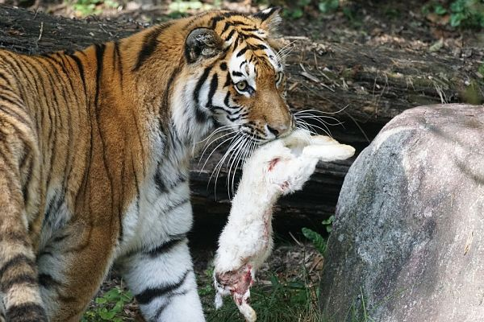
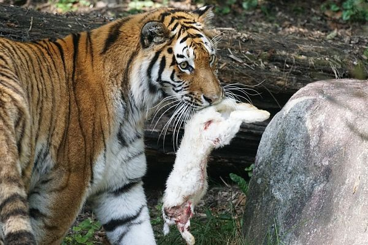
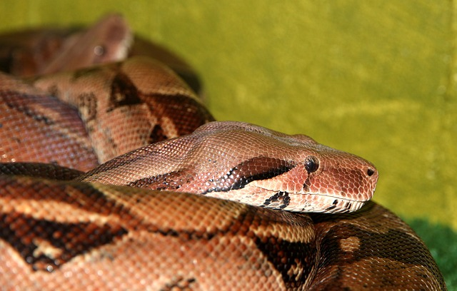
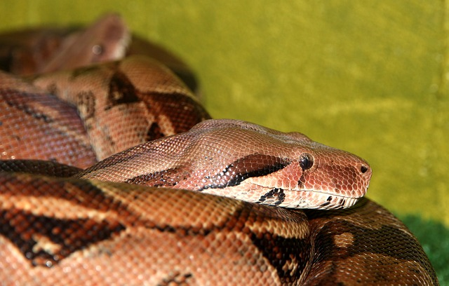

FLUJOS DE MATERIA Y ENERGÍA EN LOS ECOSISTEMAS
Sabemos que tanto la materia como la energía ni se crean ni se destruyen de acuerdo a la primera ley de la termodinámica, sino que se transforman constantemente pasando de un nivel a otro. Esto denota que tanto materia como energía deben tener fuentes de ingreso y salida a los ecosistemas. Estas fuentes de ingreso y salida son los organismos vivos, capaces de tomar la energía presente en el entorno y transformarla de acuerdo a sus necesidades biológicas. A través de las eventuales relaciones que se puedan formar entre un organismo u otro, esta energía se va movilizando entre organismos y entre niveles de ecosistemas, de modo que se establece un flujo unidireccional de la energía establecido desde la luz solar, hacia los denominados organismos productores (organismos capaces de realizar el proceso de transformación de la energía solar en energía química (fotosíntesis). La energía que captan y transforman los organismos productores es transferida a organismos que no pueden realizar fotosíntesis a través de la ingesta de estos por parte de organismos consumidores primarios (como los animales herbívoros); a su vez, los organismos herbívoros pueden eventualmente ser comidos por organismos consumidores secundarios (como los animales carnívoros), transfiriendo nuevamente la energía a otro nivel del ecosistema. Toda esta trama recibe el nombre de comunidad biológica. En cada traspaso de energía entre un nivel y otro de la comunidad biológica tenemos pérdida o salida de energía hacia el ecosistema en forma de calor, de modo que los últimos niveles del ecosistema, representados por los consumidores secundarios y escaños posteriores van captando cada vez menos energía, versus los productores. El resumen estaría dado de la siguiente manera:
- Energía solar -> Productores-> Fotosíntesis-> Consumidores primarios-> Depredación -> Consumidores secundarios -> Depredación -> Consumidores terciarios -> etcétera.
Así como la energía representa un flujo unidireccional en los ecosistemas, la materia representa un flujo cíclico, de modo que todos los elementos que forman parte de un nivel del ecosistema tienen la capacidad de entrar en otro nivel gracias a la acción de organismos que operan en todo nivel de la comunidad biológica, denominados organismos descomponedores; estos tienen la capacidad de retornar en todo nivel del ecosistema los elementos químicos al ambiente, para que a partir de su reciclaje puedan construirse nuevos escalones del ecosistema.
ROLES ECOLÓGICOS EN FUNCIÓN DE LA EXPLOTACIÓN ENERGÉTICA
De acuerdo a cómo usen la energía los organismos en los diferentes niveles de la comunidad biológica, encontraremos organismos de tipo:
-
Productores: son organismos capaces de fabricar su propio alimento (autótrofos) gracias a la facultad de transformar la energía de la luz solar en energía química: esta energía química implica la formación de moléculas orgánicas como la glucosa a partir de moléculas inorgánicas como el dióxido de carbono. Los organismos productores son la puerta de ingreso de la energía a las comunidades biológicas, al ser los únicos capaces de realizar este proceso de transformación.


-
Consumidores: son organismos incapaces de fabricar su propio alimento (heterótrofo), por lo que deben recurrir a otras fuentes de nutrición a través de la ingesta de parte o de la totalidad de otros organismos. Aquellos que se valen de organismos productores son denominados consumidores primarios, y por ende, herbívoros, en tanto que aquellos que se valen de otros organismos consumidores son denominados consumidores secundarios, terciarios e inclusive cuaternarios.
-
Descomponedores: son organismos que poseen la capacidad de liberar materia desde todos los niveles que componen la comunidad biológica. Al morir los organismos productores y consumidores, los descomponedores (por lo general hongos y bacterias) tienen la facultad de desestructurar los constituyentes químicos de estos y retornarlos a la matriz de elementos presentes en el medioambiente, a partir de los cuales se reformarán nuevos organismos productores, consumidorestambién descomponedores.


 
  

Fuentes de información:
http://www.escolares.net/biologia/flujo-de-materia-y-energia/